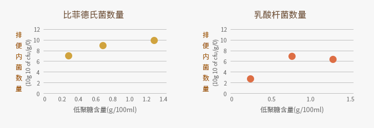

爱思诺金典名作 1단계
- 产品分类 : 幼儿食品
- 净含量 : 800g, 400g
| 产品类型 | 乳基粉婴幼儿配方食品 |
|---|---|
| 制造商 | 每日乳业(株)平泽工厂 |
| 经销商 | 山东每怡国际贸易有限公司 |
| 地址及电话 | 中国山东省烟台高新技术产业开发区经七路6号 |
| 保质期 | 1095日 |
| 注册编号 | No 6410000-004-1981-0002 |
爱思诺金典名作的特点
促进消化并增强肠道免疫力
- 以亚体 ™ 因子为基础，专为爱思诺金典名作进行的营养设计——益消优护，帮助宝宝健康成长。
- 坚守爱思诺 (absolute ® )的信念，专注“关爱每一个婴儿”的爱思诺精神
- 爱思诺金典名作不仅有利于大脑发育，也有利于消化。保护宝宝的营养配方全新诞生。
爱思诺益消优护™是由帮助免疫细胞活性的5种核苷酸以及对有益菌滋长有帮助的GOS和FOS构成的营养配方，提高宝宝保护力。
-
01保护因子：核苷酸、GOS(低聚半乳糖)、FOS(低聚果糖)、硒
- 有助于提高保护力的5种核苷酸，与一代‘金典名作系列’相比含量增加150%。
(以爱思诺金典名作1段为标准，2段和3段含量均增加221%） - 含有GOS(低聚半乳糖)和FOS(低聚果糖)，帮助保护宝宝的肠道。
- 考虑到宝宝的保护力，含有硒。
- 有助于提高保护力的5种核苷酸，与一代‘金典名作系列’相比含量增加150%。
-
02吸收因子：乳清蛋白、左旋肉碱、OPO结构脂
- 提高脂肪和钙的双重吸收率、使排便更柔软的OPO结构脂（1,3-二油酸 2-棕榈酸甘油三酯）。
- 含有左线肉碱，帮助激活脂肪代谢。
-
03智力因子：DHA和ARA、胆碱、牛磺酸、亚油酸和α-亚麻酸
- 含有DHA和ARA，帮助宝宝大脑发育同时将含量调配为适合亚洲宝宝的1:1 。
- 含有胆碱和牛磺酸帮助宝宝开发智力
-
04视力因子：叶黄素
- 添加叶黄素配方，提升宝宝视力。
- 爱思诺经典名作将叶黄素含量提升到所有每日产品中的首位，让宝宝的视力
和学习力同步提升(爱思诺金典名作 1段100μg/100g, 2段和3段 170μg/100g)
-
05成长因子：乳糖、蛋白质、脂肪
- 必需营养成分中蛋白质、脂肪、碳水化合物的含量，是根据韩国妈妈和亚洲母
乳文献的研究的结果调整 的配方比例。 - 脂肪和蛋白质的含量降低为宝宝成长过程正好所需的含量。碳水化合物只含
有乳糖，是适合宝宝的设计。
- 必需营养成分中蛋白质、脂肪、碳水化合物的含量，是根据韩国妈妈和亚洲母
“亚体™因子”是亚洲母乳研究中心为亚洲宝宝设计的营养配方，此配方的5
个核心因子是‘智力因子、视力因子、 吸收因子、保护因子和成长因子。
-
DHA / ARA
在构成大脑和视网膜的脂肪酸中，DHA和ARA是占比最大的多不饱和脂肪酸（PUFA）。在新生儿的身体发育及维持ω-3和ω-6的均衡方面十分重要。
DHA和ARA，作为帮助宝宝视觉和神经系统发育的成分，在人体内可以自然合成，但新生儿的代谢体系尚未成熟，在体内不能充分合成，需要通过外界摄取来补充。爱思诺金典名作将DHA和ARA的比例调整至亚洲女性的母乳水平-- 1:1，提高吸收率。 -
牛磺酸
牛磺酸是构成中枢神经的一种重要成分，对新生儿大脑发育非常重要。牛磺酸通过L-胱氨酸或L-蛋氨酸合成时，需要几种酶。然而在早产儿或新生儿体内，特别是“半胱亚磺酸脱羟酶（CSAD）”的活性很低，不能合成足够量的牛磺酸。CSAD的活性从出生后3周以后才开始慢慢提升到成人水平，因此，需要给刚出生后到3周的新生儿补充足够的牛磺酸 。
-
胆碱
胆碱作为生物体细胞膜的主要磷脂‘磷脂酰胆碱’的构成成分，也是神经传达物质‘乙酰胆素’的前体，因此是大脑活动的营养素。
-
亚油酸和α-亚麻酸
机体自身不能合成的脂肪酸被称为必需脂肪酸，必需脂肪酸中的亚油酸和α-亚麻酸是体内合成ARA和DHA的重要前体物质。对于婴幼儿来说，不仅是脂肪酸的供给量，其比例也非常重要。亚油酸是合成ARA等ω-6系列脂肪酸的前体物质。α-亚麻酸是合成DHA等ω-3系列脂肪酸的前体物质，因其互相提供酶，国 际婴幼儿食品标准CODEX中建议，婴幼儿配方奶粉中的亚油酸和α-亚麻酸的比例保持在5:1~15:1的水平。爱思诺金典名作合理调整将亚油酸和α-亚麻酸的配比。
宝宝从出生后视觉能力开始逐渐发育，到4岁的时候大部分视觉能力发育到和成人相似，在这期间对宝宝眼睛健康的保护很重要。叶黄素作为在视网膜和晶状体上存在最多的类胡萝卜，能阻挡蓝光危害蓝光危害（Blue light hazard）是指在可视光线的短波长领域(400-500nm)里存在的蓝光给眼睛带来氧化伤害的现象）。特别是婴幼儿吸收蓝光的能力比较低，直接照射太阳光可能会损伤视网膜。另外根据临床实验发现，叶黄素也被作为防止早产儿视网膜症(Retinopathy of prematurity)的一种重要成分。还有, 叶黄素作为大脑中主要的类胡萝卜素, 分布在婴儿大脑中负责记忆，学习能力的相关区域（66-77%）, 在大脑中起到重要的作用。
宝宝从出生后视觉能力开始逐渐发育，到4岁的时候大部分视觉能力发育到和成人相似，在这期间对宝宝眼睛健康的保护很重要。叶黄素作为在视网膜和晶状体上存在最多的类胡萝卜，能阻挡蓝光危害蓝光危害（Blue light hazard）是指在可视光线的短波长领域(400-500nm)里存在的蓝光给眼睛带来氧化伤害的现象）。特别是婴幼儿吸收蓝光的能力比较低，直接照射太阳光可能会损伤视网膜。另外根据临床实验发现，叶黄素也被作为防止早产儿视网膜症(Retinopathy of prematurity)的一种重要成分。还有, 叶黄素作为大脑中主要的类胡萝卜素, 分布在婴儿大脑中负责记忆，学习能力的相关区域（66-77%）, 在大脑中起到重要的作用。
添加高浓度的OPO结构脂（1,3-二油酸 2-棕榈酸甘油三酯），低聚糖混合物的益生元(Prebiotics)和水解乳清蛋白质的奶粉，减少出生后1个月期间宝宝排便障碍的问题，同时有利于胃肠耐性。因此，爱思诺金典名作含有帮助宝宝胃肠吸收的原料，解决宝宝排便问题。强化β-棕榈酸含量的OPO结构脂（1,3-二油酸 2-棕榈酸甘油三酯），能够帮助钙和矿物质在小肠和大肠的吸收，增加宝宝的骨矿物质含量（BMC）。检测骨音速（SOS）是检测宝宝骨强度的方法，检测结果显示：比起喂养一般奶粉（β-棕榈酸占全部棕榈酸含量14%）的婴儿，喂养母乳和喂养富含β-棕榈酸的奶粉（β-棕榈酸占全部棕榈酸含量43%）的宝宝的骨音速(SOS)更高。宝宝出生后在成长过程中，由于骨内矿物质不断向骨膜移动，骨矿物质含量减少, 给宝宝喂养含有OPO结构脂的奶粉，可以增加宝宝的骨矿物质含量，有利于强化骨密度。
左旋肉碱（L-carnitine）
通过消化器官吸收并输送到各组织器官的脂肪分解为脂肪酸后，依靠线粒体内的β-氧化剂代谢后产生能量。这时，从短链脂肪酸到中链脂肪酸，可以自由通过线粒体内膜，而长链脂肪酸必须和肉碱结合后才能通过线粒体内膜。肉碱在体内可以由赖氨酸和蛋氨酸自然合成，但是，由于婴幼儿（特别是新生儿和早产儿）体内的合成能力很弱而且对脂肪的需求很高，因此，添加帮助激活脂肪代谢的成分 。
爱思诺金典名作正是为了婴幼儿能够充分摄取肉碱而精心研发设计的。
和低聚果糖（FOS）
母乳喂养的宝宝，肠内92%的有益双歧杆菌都是存活的，而奶粉喂养的宝宝，肠内双歧杆菌只有19%能存活，其它的都由包括大肠菌在内的杂菌构成。母乳喂养的宝宝之所以有如此优秀的肠内菌群状态是因为母乳中含有更多优质的低聚糖。低聚糖可保护肠道，激活肠道机能，作为动物双歧杆菌、乳酸杆菌等有益乳酸菌（帮助强化保护力）的养料，帮助肠内有益的乳酸菌的增殖 ，助于营造一个健康的肠道环境。爱思诺金典名作搭配由低聚半乳糖（GOS）和低聚果糖（FOS）构成的复合低聚糖益生元，帮助宝宝肠内有益乳酸菌的增殖，帮助保护宝宝的肠道健康使宝宝排便更顺畅。

- 在母乳中含有大量的核苷酸，该成分与生物体内多种代谢过程相关，与体内代谢过程所产生的所有能量反应相关，同时起到为各个组织细胞运输实际能的作用。一般来说，核苷酸在身体内可以合成，所以通常被认为是非必须 的 营养素。体内合成核苷酸的量不能满足幼儿期快速成长所需，所以属于需要通过饮食供给的必需营养素。该事实可以从母乳中含有大量的核苷酸推测得出。在成长很快的幼儿期一定要通过饮食供给得到。
- 关于母乳中含有核苷酸的生理功能，许多研究结果显示如下相同的功能。
促进免疫细胞的功能
许多动物试验的结果证明核苷酸在免疫体系中起到很多作用。给动物提供含有核苷酸的食物，结果显示，增加了 与体内感染防御功能相关白细胞介素-2(IL-2)的产生量，促进免疫(NK)细胞的活性。此结果在幼儿体内出现了同样的结果。
【表3】核苷酸的免疫细胞促进效应, 核苷酸促进免疫细胞增殖的效果
| 母乳 | 添加核苷酸的奶粉 | 未添加核苷酸的奶粉 | |
|---|---|---|---|
| 2个月月龄 : NK-cell, % cytotoxicity | |||
| 50:1 (Effector:target cell) | 41.74 ± 4.75 | 32.24 ± 3.40 | 21.65 ± 2.20 |
| 25:1 (Effector:target cell) | 21.05 ± 3.20 | 19.48 ± 2.51 | 13.48 ± 1.67 |
| Interleukin-2, U/mL | 0.37 ± 0.12 | 0.90 ± 0.28 | 0.27 ± 0.11 |
| 2个月月龄 : NK-cell, % cytotoxicity | |||
| 50:1 (Effector:target cell) | 25.20 ± 2.78 | 23.73 ± 4.02 | 14.07 ± 1.26 |
| 25:1 (Effector:target cell) | 15.47 ± 0.77 | 14.94 ± 3.47 | 7.90 ± 0.86 |
| Interleukin-2, U/mL | 1.84 ± 0.35 | 1.53 ± 0.21 | 0.75 ± 0.21 |
促进双歧杆菌的生长
通过在最小营养培养基里添加核苷酸，促进肠道内有益双歧杆菌（bifidobacteria）的增殖。
另外，相比于喂养普通奶粉宝宝的大便，喂养添加核苷酸配方奶粉宝宝的大便检测出来更多的有益双歧杆菌（bifidobacteria），比例更高。
同时可以得出被公认为肠道有害菌的‘革兰阴性肠内细菌‘的比例更低。
爱思诺金典名作添加各种核苷酸(CMP, UMP, GMP, IMP, AMP)，帮助宝宝的保护力。
硒是身体的抗氧化酵素（谷胱甘肽过氧化物酶、硫氧还原蛋白还原酶等）和硒-P蛋白的重要构成成分，依据研究资料，帮助提高身体保护力。
婴幼儿所需热量的45~50%是从脂肪获得。而且，脂溶性维生素和必需脂肪酸也是从脂肪提供。因此，脂肪在幼儿成长和发育阶段起到非常重要的作用。
蛋白质
-
母乳化的蛋白质的含量
在宝宝成长的婴幼儿期，是按照宝宝的体重来计算他们所需的蛋白质含量，而且，所需量比其它时期都要高。另一方面，对宝宝来说如果供大于求，蛋白质会对宝宝体内的氮气代谢和肾脏功能造成负担。因此，重要的是为宝宝提供不多不少的蛋白质。同时，蛋白质供应的氨基酸和热量，用于形成新的肌肉、结缔组织和骨骼。另外还是合成多种酶、荷尔蒙和血浆蛋白质时所需的基础营养素。
爱思诺金典名作将蛋白质的总含量降低到母乳中的含量水平，减少因肾脏溶脂负荷过高引起婴幼儿肾脏的负担。而且，如果宝宝食用高蛋白的奶粉会超过WHO（世界卫生组织）公布的宝宝成长标准，相比母乳喂养的宝宝肥胖的概率更高。爱思诺金典名作降低了蛋白质的含量，防止幼儿肥胖。 -
母乳化的蛋白质组成比例
母乳中乳清蛋白比例是60%~70%，酪蛋白的比例是30%~40%；而牛奶中乳清蛋白比例是20%，酪蛋白的比例是80%。母乳的乳清蛋白中几乎没有β-乳球蛋白，大部分是α-乳清蛋白；而牛奶的乳清蛋白中β-乳球蛋白的含量占多半以上。爱思诺金典名作不仅通过把乳清蛋白和酪蛋白的比例调整至60:40，增强吸收率；并且为了减少宝宝的过敏反应，还添加了部分水解乳清蛋白并且提升了α-乳清蛋白的含量。
乳糖是包括母乳在内所有哺乳类动物的奶汁中都含有的碳水化合物的重要成分。因此，对新出生的婴幼儿来说，乳糖是很重要的能量源。相比于成人，特别是刚出生的宝宝对能量的需求量约是体重的2倍。总能量的25%，用于大脑活动。但是可以用作大脑能量源的营养素非常有限，70%以上的母乳乳糖被用于作为大脑的能量来源。帮助肠道内有益双歧杆菌的增殖，不仅可以帮助钙、磷、镁、铁等的矿物质的吸收，而且乳糖的分解物—半乳糖用于合成脑神经组织的构成物脑苷脂。相比葡萄糖会更快进行代谢，因此，在新生儿和婴幼儿时期，乳糖有很重要的作用。爱思诺金典名作将乳糖的含量设计为亚洲宝宝的标准，且不添加葡萄糖。
食用方法及注意事项
-
- 喂奶时，请先确定奶液温度和体温相近。
- 请勿使用微波炉加热冲调好的奶液 以免烫伤。
- 喂剩的奶液请丢弃，勿重复喂哺。
- 专用量勺使用后，洗净晾干，放置清洁处保存。
-
- 开罐后尽量3周内用完。（不可冷藏保存）
- 爱思诺金典名作的盖密封性极好，可防潮及害虫进入。 每次使用后请将
罐盖紧，放在阴凉干燥处以保持新鲜。 - 不当配制或使用不当可能引起不良的反应。
从现摄取奶粉过渡到爱思诺金典名作的方法
先将原有奶粉与适合月龄的爱思诺金典名作混合喂养。
喂养时，注意观察宝宝的接受情况，宝宝接受情况良好的话，可以慢慢增加爱思诺金典名作的比重。
- 01
由母乳转换到爱思诺金典名作时，需要在断奶前1~2个月使宝宝熟悉奶瓶。
-
02
使宝宝熟悉奶瓶的方法
- 在喂哺母乳中间用奶瓶喂水。
- 将母乳挤到奶瓶中喂养。
- 采用与母乳喂养不同的姿势用奶瓶喂养。
- 01
喂养时，先喂母乳，然后用爱思诺金典名作喂养。
-
02
早晨、晚上喂养母乳。 上班的妈妈们可以在上班前和下班后给宝
宝喂少量母乳。 -
03
白天使用爱思诺金典名作，睡觉之前使用母乳喂养。
在有母乳，但母乳不足的情况下，仅晚上喂养会更好，这样能避
免夜间起来准备奶粉，宝宝和妈妈都能睡得很舒服。


中国地区客服热线 ：400-678-217
【韩国总公司】大韩民国 首尔市 钟路区 钟路1街 50号 The K-Twin Tower A座2楼 / 代表理事:金 庭 完 / TEL: +82 1588-1539
/ 事业者登录番号: 120-81-11794 [中国进口商 烟台每怡进出口有限公司] 中华人民共和国 山东省烟台市莱山区飞龙路19号

COPYRIGHT ⓒ 2016 by Maeil Dairies Co., Ltd. All rights reserved.